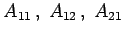

Inhalt Index DeskTop Bronstein

 Wahrscheinlichkeitsrechnung und Mathematische Statistik Wahrscheinlichkeitsrechnung Zufallsgrößen, Verteilungsfunktionen
Wahrscheinlichkeitsrechnung und Mathematische Statistik Wahrscheinlichkeitsrechnung Zufallsgrößen, Verteilungsfunktionen


Eine Menge von Elementarereignissen möge sich dadurch beschreiben lassen, daß eine Größe X unter Zufallsbedingungen Werte x aus einem reellen Bereich R annehmen kann. D.h., jedes zufällige Ereignis eines gewissen Versuches soll durch eine reelle Zahl x charakterisiert werden. Dann werden alle zufälligen Ereignisse dieses Versuches durch die Variable X beschrieben, die Zufallsgröße oder Zufallsveränderliche genannt wird.
Besteht R aus endlich oder abzählbar unendlich vielen Werten, dann spricht man von einer diskreten Zufallsgröße; besteht R aus der ganzen reellen Zahlengeraden oder aus Teilintervallen, dann spricht man von einer kontinuierlichen Zufallsgröße.
| Beispiel A |
|
Ordnet man im Beispiel A den Ereignissen  bzw. A22 die Werte 1, 2, 3 bzw. 4 zu, so ist damit eine diskrete Zufallsgröße X definiert. |
| Beispiel B |
|
Die Brenndauer T einer aus einem Produktionsvorrat willkürlich herausgegriffenen Glühlampe ist eine kontinuierliche Zufallsveränderliche. Das Elementarereignis T=t tritt ein, wenn die Brenndauer T gleich der Zeit t ist. |